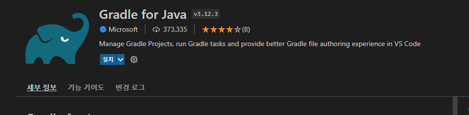

$ java -version
java version “18.0.2” 2022-07-19
Java(TM) SE Runtime Environment (build 18.0.2+9-61)
Java HotSpot(TM) 64-Bit Server VM (build 18.0.2+9-61, mixed mode, sharing)
$ ./gradlew jar
Starting a Gradle Daemon, 2 incompatible and 2 stopped Daemons could not be reused, use --status for details
BUILD SUCCESSFUL in 19s
3 actionable tasks: 3 executed
$ ./gradlew bootJar
BUILD SUCCESSFUL in 4s
4 actionable tasks: 4 up-to-date
build/libs/*.jar
JAR(Java Archive, 자바 아카이브)는 여러개의 자바 클래스 파일과, 클래스들이 이용하는 관련 리소스(텍스트, 그림 등) 및 메타데이터를 하나의 파일로 모아서 자바 플랫폼에 응용 소프트웨어나 라이브러리를 배포하기 위한 소프트웨어 패키지 파일 포맷이다.
JAR 파일은 실제로 ZIP 파일 포맷으로 이루어진 압축 파일로서, 파일 확장자는 .jar이다.
컴퓨터 사용자들은 JDK에 포함된 jar 명령어를 이용하여 JAR 파일을 만들거나 압축을 풀 수 있다.
또, zip 도구를 사용할 수도 있으나 압축 시에는 매니페스트 파일이 처음이어야 하는 경우가 있어서 zip 파일 헤더의 엔트리 순서가 중요하다.
JAR 안에서 파일 이름들은 유니코드 텍스트로 되어 있다.
$ java -jar .\test-vs-code-0.0.1-SNAPSHOT.jar
. ____ _ __ _ _
/\\ / ___'_ __ _ _(_)_ __ __ _ \ \ \ \
( ( )\___ | '_ | '_| | '_ \/ _` | \ \ \ \
\\/ ___)| |_)| | | | | || (_| | ) ) ) )
' |____| .__|_| |_|_| |_\__, | / / / /
=========|_|==============|___/=/_/_/_/
:: Spring Boot :: (v2.7.2)
2022-08-05 17:25:32.578 INFO 11512 --- [ main] t.s.v.testvscode.TestVsCodeApplication : Starting TestVsCodeApplication using Java 18.0.2 on DESKTOP-SC8B9ID with PID 11512 (C:\work2022\git\hnc-hskim\samples\springboot\test-vs-code\build\libs\test-vs-code-0.0.1-SNAPSHOT.jar started by hskim in C:\work2022\git\hnc-hskim\samples\springboot\test-vs-code\build\libs)
2022-08-05 17:25:32.585 INFO 11512 --- [ main] t.s.v.testvscode.TestVsCodeApplication : No active profile set, falling back to 1 default profile: "default"
2022-08-05 17:25:33.647 INFO 11512 --- [ main] .s.d.r.c.RepositoryConfigurationDelegate : Bootstrapping Spring Data JPA repositories in DEFAULT mode.
2022-08-05 17:25:33.674 INFO 11512 --- [ main] .s.d.r.c.RepositoryConfigurationDelegate : Finished Spring Data repository scanning in 11 ms. Found 0 JPA repository interfaces.
2022-08-05 17:25:34.711 INFO 11512 --- [ main] o.s.b.w.embedded.tomcat.TomcatWebServer : Tomcat initialized with port(s): 8080 (http)
2022-08-05 17:25:34.733 INFO 11512 --- [ main] o.apache.catalina.core.StandardService : Starting service [Tomcat]
2022-08-05 17:25:34.734 INFO 11512 --- [ main] org.apache.catalina.core.StandardEngine : Starting Servlet engine: [Apache Tomcat/9.0.65]
2022-08-05 17:25:34.874 INFO 11512 --- [ main] o.a.c.c.C.[Tomcat].[localhost].[/] : Initializing Spring embedded WebApplicationContext
2022-08-05 17:25:34.875 INFO 11512 --- [ main] w.s.c.ServletWebServerApplicationContext : Root WebApplicationContext: initialization completed in 2140 ms
2022-08-05 17:25:35.172 INFO 11512 --- [ main] o.f.c.internal.license.VersionPrinter : Flyway Community Edition 8.5.13 by Redgate
2022-08-05 17:25:35.173 INFO 11512 --- [ main] o.f.c.internal.license.VersionPrinter : See what's new here: https://flywaydb.org/documentation/learnmore/releaseNotes#8.5.13
2022-08-05 17:25:35.173 INFO 11512 --- [ main] o.f.c.internal.license.VersionPrinter :
2022-08-05 17:25:35.188 INFO 11512 --- [ main] com.zaxxer.hikari.HikariDataSource : HikariPool-1 - Starting...
2022-08-05 17:25:35.514 INFO 11512 --- [ main] com.zaxxer.hikari.HikariDataSource : HikariPool-1 - Start completed.
2022-08-05 17:25:35.531 INFO 11512 --- [ main] o.f.c.i.database.base.BaseDatabaseType : Database: jdbc:h2:mem:6c0933b2-c77b-474d-9973-17e89d02a625 (H2 2.1)
2022-08-05 17:25:35.587 WARN 11512 --- [ main] o.f.c.internal.database.base.Database : Flyway upgrade recommended: H2 2.1.214 is newer than this version of Flyway and support has not been tested. The latest supported version of H2 is 2.1.210.
2022-08-05 17:25:35.615 INFO 11512 --- [ main] o.f.core.internal.command.DbValidate : Successfully validated 0 migrations (execution time 00:00.007s)
2022-08-05 17:25:35.615 WARN 11512 --- [ main] o.f.core.internal.command.DbValidate : No migrations found. Are your locations set up correctly?
2022-08-05 17:25:35.627 INFO 11512 --- [ main] o.f.c.i.s.JdbcTableSchemaHistory : Creating Schema History table "PUBLIC"."flyway_schema_history" ...
2022-08-05 17:25:35.664 INFO 11512 --- [ main] o.f.core.internal.command.DbMigrate : Current version of schema "PUBLIC": << Empty Schema >>
2022-08-05 17:25:35.667 INFO 11512 --- [ main] o.f.core.internal.command.DbMigrate : Schema "PUBLIC" is up to date. No migration necessary.
2022-08-05 17:25:35.946 INFO 11512 --- [ main] o.hibernate.jpa.internal.util.LogHelper : HHH000204: Processing PersistenceUnitInfo [name: default]
2022-08-05 17:25:36.075 INFO 11512 --- [ main] org.hibernate.Version : HHH000412: Hibernate ORM core version 5.6.10.Final
2022-08-05 17:25:36.367 INFO 11512 --- [ main] o.hibernate.annotations.common.Version : HCANN000001: Hibernate Commons Annotations {5.1.2.Final}
2022-08-05 17:25:36.649 INFO 11512 --- [ main] org.hibernate.dialect.Dialect : HHH000400: Using dialect: org.hibernate.dialect.H2Dialect
2022-08-05 17:25:37.074 INFO 11512 --- [ main] o.h.e.t.j.p.i.JtaPlatformInitiator : HHH000490: Using JtaPlatform implementation: [org.hibernate.engine.transaction.jta.platform.internal.NoJtaPlatform]
2022-08-05 17:25:37.092 INFO 11512 --- [ main] j.LocalContainerEntityManagerFactoryBean : Initialized JPA EntityManagerFactory for persistence unit 'default'
2022-08-05 17:25:37.205 WARN 11512 --- [ main] JpaBaseConfiguration$JpaWebConfiguration : spring.jpa.open-in-view is enabled by default. Therefore, database queries may be performed during view
rendering. Explicitly configure spring.jpa.open-in-view to disable this warning
2022-08-05 17:25:37.486 DEBUG 11512 --- [ main] s.w.s.m.m.a.RequestMappingHandlerAdapter : ControllerAdvice beans: 0 @ModelAttribute, 0 @InitBinder, 1 RequestBodyAdvice, 1 ResponseBodyAdvice
2022-08-05 17:25:37.721 DEBUG 11512 --- [ main] s.w.s.m.m.a.RequestMappingHandlerMapping : 3 mappings in 'requestMappingHandlerMapping'
2022-08-05 17:25:37.775 DEBUG 11512 --- [ main] o.s.w.s.handler.SimpleUrlHandlerMapping : Patterns [/webjars/**, /**] in 'resourceHandlerMapping'
2022-08-05 17:25:37.809 DEBUG 11512 --- [ main] .m.m.a.ExceptionHandlerExceptionResolver : ControllerAdvice beans: 0 @ExceptionHandler, 1 ResponseBodyAdvice
2022-08-05 17:25:38.042 INFO 11512 --- [ main] o.s.b.w.embedded.tomcat.TomcatWebServer : Tomcat started on port(s): 8080 (http) with context path ''
2022-08-05 17:25:38.066 INFO 11512 --- [ main] t.s.v.testvscode.TestVsCodeApplication : Started TestVsCodeApplication in 6.269 seconds (JVM running for 7.013)

# 중첩 Gradle 프로젝트 검색은 기본적으로 활성화되어 있지 않으며 활성화하도록 설정하려면 다음을 셋티한다.
# .vscode의 settings.json파일에 환경변수를 등록한다.
{
"java.configuration.updateBuildConfiguration": "interactive",
"gradle.nestedProjects": true
}
jdk설치후 시스템 재시작을 해야 vscode에서 환경변수가 제대로 반영된다.
# JAVA_HOME 환경변수 패스확인
PS> $Env:JAVA_HOME
C:\Program Files\Android\Jdk\microsoft_dist_openjdk_1.8.0.25
# 변경
PS> $Env:JAVA_HOME = "C:\Program Files\Java\jdk-18.0.2"
./gradlew bootRun
> Task :bootRun
16:07:25.068 [Thread-0] DEBUG org.springframework.boot.devtools.restart.classloader.RestartClassLoader - Created RestartClassLoader org.springframework.boot.devtools.restart.classloader.RestartClassLoader@24829070
. ____ _ __ _ _
/\\ / ___'_ __ _ _(_)_ __ __ _ \ \ \ \
( ( )\___ | '_ | '_| | '_ \/ _` | \ \ \ \
\\/ ___)| |_)| | | | | || (_| | ) ) ) )
' |____| .__|_| |_|_| |_\__, | / / / /
=========|_|==============|___/=/_/_/_/
:: Spring Boot :: (v2.7.2)
# jdk 18 alpine 버전 사용
FROM openjdk:18-alpine AS builder
# gradlew 복사
COPY gradlew .
# gradle 복사
COPY gradle gradle
# build.gradle 복사
COPY build.gradle .
# settings.gradle 복사
COPY settings.gradle .
# 웹 어플리케이션 소스 복사
COPY src src
# gradlew 실행권한 부여
RUN chmod +x ./gradlew
# gradlew를 사용하여 실행 가능한 jar 파일 생성
RUN ./gradlew bootJar
# 베이스 이미지
FROM openjdk:18-alpine
# builder 이미지에서 build/libs/*.jar 파일을 app.jar로 복사
COPY --from=builder build/libs/*.jar app.jar
# 컨테이너 Port 노출
EXPOSE 8080
# jar 파일 실행
ENTRYPOINT ["java","-jar","/app.jar"]